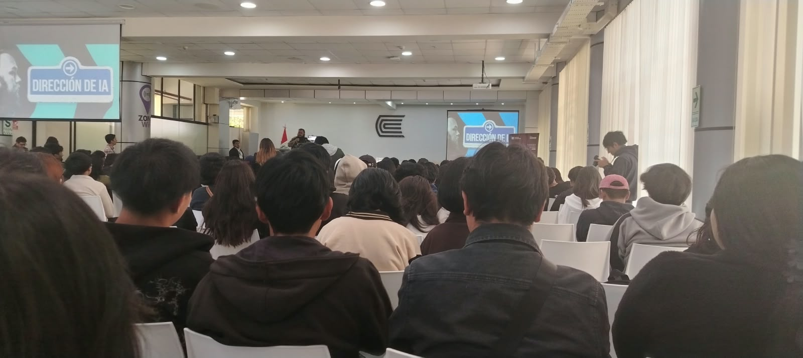
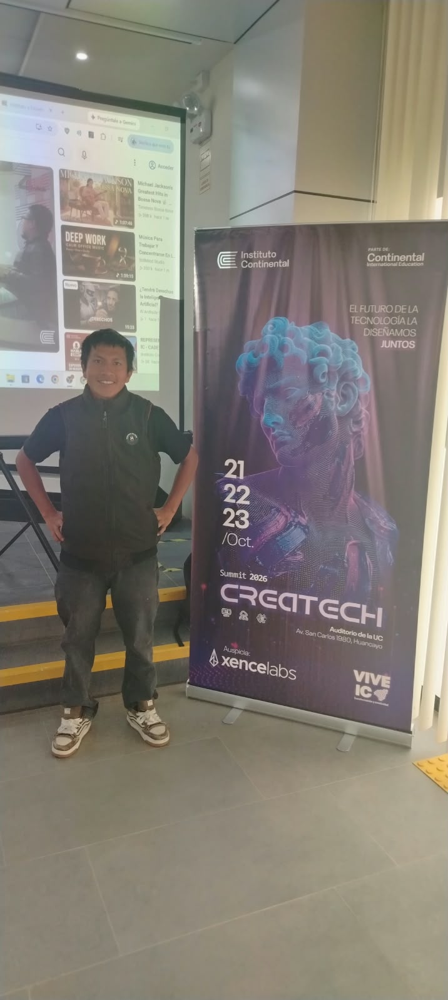

Gestión de clientes
Registro y consulta de información de los clientes.
INFORME DEL PROYECTO
Propuesta de un sistema web para organizar y mejorar la gestión de los servicios de la barbería.
Conocer el proyectoPRESENTACIÓN
Barbones VIP es una propuesta de sistema web orientada a apoyar las actividades de una barbería. El proyecto busca centralizar la información y facilitar el control de clientes, citas, servicios, barberos, inventario y reportes.
Esta página sirve como portada para el informe académico y como espacio para mostrar fotografías, procesos y tecnologías consideradas en el desarrollo.
Proponer un sistema web que contribuya a mejorar la organización y el control de los procesos de la barbería.
ALCANCE FUNCIONAL
Registro y consulta de información de los clientes.
Organización de horarios, disponibilidad y citas.
Control de servicios ofrecidos, precios y pagos.
Registro de productos y seguimiento de existencias.
Información del personal y sus horarios de atención.
Consulta de datos para apoyar la toma de decisiones.
EVIDENCIAS DEL PROYECTO
Guarda tus imágenes en la carpeta fotos y actualiza los nombres de archivo en esta sección.



Importante: GitHub Pages muestra imágenes que estén guardadas en el repositorio. Coloca allí tus fotos y conserva exactamente los mismos nombres.
HERRAMIENTAS
Esta portada es estática. Si posteriormente necesitas guardar citas, usuarios o pagos, hará falta conectar un backend y una base de datos.